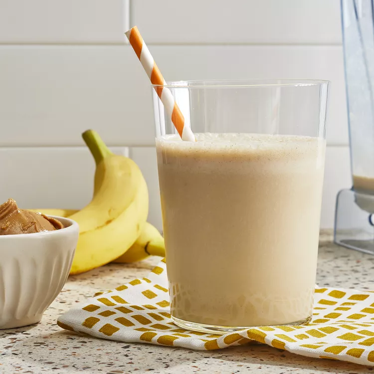

Peanut Butter Banana Smoothie

Quick and delicious peanut butter banana smoothie
This peanut butter banana smoothie is so refreshing, and it's sweet and tasty.
Ingredients
- 2 bananas, broken into chunks
- 2 cups milk
- ½ cup peanut butter
- 2 tablespoons honey, or to taste
- 2 cups ice cubes
Steps
- Place bananas, milk, peanut butter, honey, and ice cubes in a blender; blend until smooth, about 30 seconds.